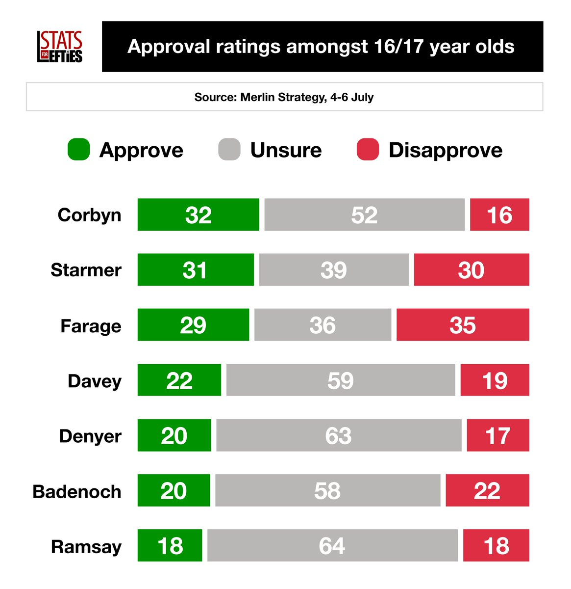

🇩🇪🇪🇺🌹Ashley Block🍥🇹🇼🏳️⚧️
@bolckAshley
在英國🇬🇧的16-17歲年齡人群中，傑瑞米·柯賓目前是最受歡迎的政治家，緊隨其後的是英國自民黨黨魁愛德·戴維。
值得注意的地方是，英國現任首相兼工黨黨魁史塔默位於倒數第二，僅高於改革黨黨魁法拉奇。

Stats for Lefties 🍉🏳️⚧️
@LeftieStats
🚨 Net approval with 16/17 year olds 👇
🟣 Corbyn +16
🟠 Davey +3
🟢 Denyer +3
🔴 Starmer +1
🔵 Badenoch -2
➡️ Farage -6
Via @StrategyMerlin, 4-6 July https://t.co/EJdfqohgdQ